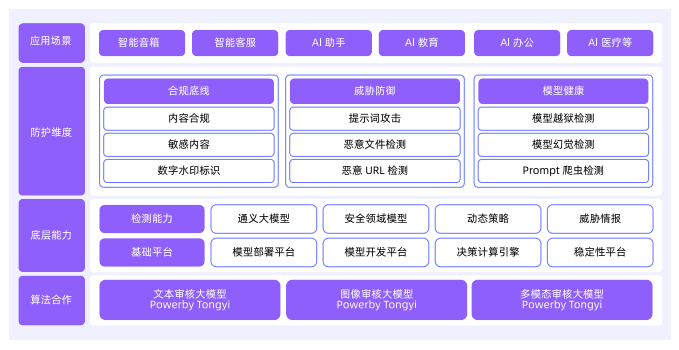
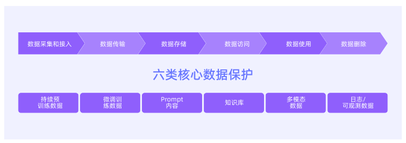
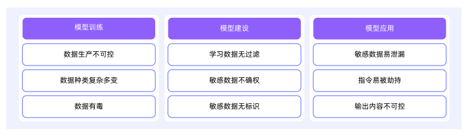
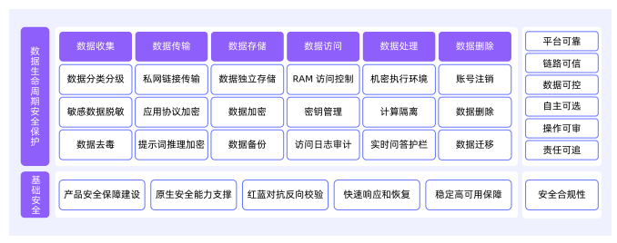
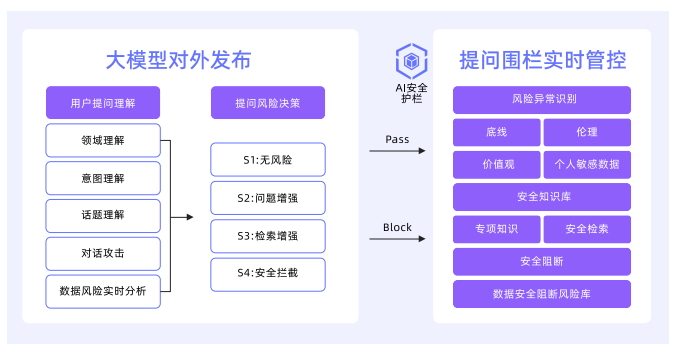
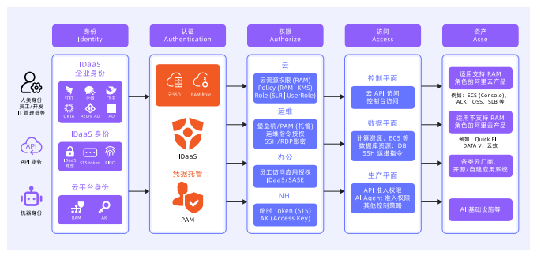
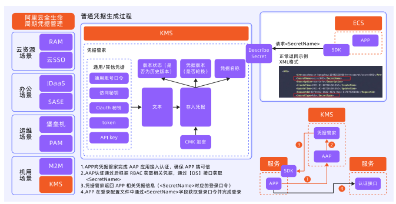
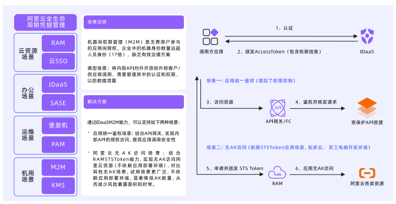

本书作者：测试开发刚哥，文章版权归个人所有，未经授权请勿转载。
10.1 AI安全风险的来源和分类
系统风险：AI模型软件的供应链风险、暴露面风险以及算力劫持风险。
网络风险：面向公网的入侵攻击，以及内网的隔离风险。
身份风险：对非人类身份的管控，越权访问，身份冒充等。
数据风险：Agent模型训练时的数据投毒，以及输入/输出阶段的敏感信息泄露等。
模型风险：Agent模型输入输出内容的恶意诱导、提示词攻击等风险。
应用风险：当AI在线上提供服务时，会面临Web入侵、DDoS攻击导致服务不可用等风险。
10.2 保护应用安全
10.2.1 背景和挑战
攻击者不再需要直接寻找暴露在公网服务中的漏洞，他们只需操纵相关的AI Agent，就能让这些AI Agent代为攻击内外部的弱电服务。
服务器端请求伪造（SSRF）是引入AI Agent后最突出的威胁。攻击者仅需通过自然语言提示，即可诱导受信任的Agent向内部网络发起恶意请求，窃取云环境凭证或扫描内网资产。Agent也可能被攻击者诱导产生包含SQL注入或XSS等恶意载荷，攻击与之交互的后端服务。
10.3.2 新的攻击面
构造恶意的语言诱导，让AI Agent变为一个无节制的资源消耗工具，使其无法正常为其他用户提供服务。构造复杂度炸弹式的指令，诱使AI Agent陷入生成海量文本的陷阱，生成数万乃至数十万的Token，导致其自身的计算成本飙升。
攻击者也可以攻击AI Agent调用的外部API，高频或海量触发复杂或昂贵的API调用。攻击者还能将恶意指令隐藏在AI Agent将要处理的网页、表格、PDF等外部数据中，当AI Agent处理这些被污染的数据时，隐藏的指令就会被执行。
10.3.3 防护思路
沿用并强化传统的应用安全最佳实践，同时实施严格的资源治理策略，针对工作流劫持类攻击，则需要设计更加完善的上下文隔离机制。
10.3.4 解决建议
一方面，对在AI场景下输入输出做安全检测的AI安全护栏方案，以及相关AI应用开发平台和网关对AI安全护栏的集成。另一方面，由于AI Agent进一步打破了传统的攻击面和网络边界，要更加关注纵深防御、动态检测、运行时安全等多种安全措施的组合。
例如当AI Agent未经过WAF或防火墙直接在内网发起恶意请求时，可以通过RASP等运行时检测方案或VPC防火墙来做防护，当AI Agent在用各种方式泄露敏感数据时，可以通过API安全、NDR等流量安全方案，从敏感数据流转的角度去及时发现风险。
10.3 保护模型安全
10.3.1 背景与挑战
输入层威胁：包括对抗样本攻击（如通过微调图像/音频诱导多模态Agent误判）、提示词注入的变种攻击（如上下文分割攻击、语义混淆攻击），以及通过恶意文件（如PDF隐写术）触发供应链漏洞。
推理层威胁：涵盖模型越狱导致的伦理失控、RAG知识库的定向爬取引发的数据资产泄露，以及函数调用劫持（如篡改API参数执行未授权操作）。
输出层威胁：设计生成式钓鱼内容（如伪造银行通知）、模型幻觉在医疗/金融场景的致命误导，以及通过隐写术在AIGC内容中植入隐蔽指令。
10.3.2 防护机制

内容合规审核，提示词攻击防御，敏感信息防护，恶意文件检测，恶意URL拦截，提示词反爬机制，模型越狱检测，模型幻觉抑制，数字水印标识。
10.3.3 模型安全的未来
自定义检测Agent可满足不同行业客户的特定业务风险识别需求。它引入了专用算法模型，并支持多行业多场景灵活配置，从而实现从通用到专属的安全检测能力升级。
10.4 保护数据安全
10.4.1 背景和挑战


10.4.2 防护框架

打造“平台可靠、链路可信、数据可控、自主可选、操作可审、责任可追”的数据安全保障体系。
10.4.3 构建全数据全生命周期的安全保障
1、数据收集
（1）数据来源：用户上传类数据、模型文件和推理数据、运行日志类数据。
（2）数据分类：以阿里云数据安全中心为例，从数据价值、敏感性、数据合规和业务需求等多角度将数据分为4个安全级别：S1、S2、S3、S4。
（3）数据脱敏
（4）数据去毒：对自有的存储资源中多种违规内容（例如涉黄、涉政、暴力、违法等）进行实时监控、检测和拦截。
2、数据传输
（1）面向数据传输提供私有网络加密
（2）提示词推理加密
（3）应用协议加密
3、数据存储
（1）存储隔离
（2）存储加密
4、数据访问
5、数据处理

6、数据删除
10.5 保护身份安全
10.5.1 背景和挑战
AI身份的管理不同于当前人类身份管理，AI Agent行为链复杂不可测，动态权限需求使得传统的静态权限模型难以适用，黑客可通过窃取API密钥、访问令牌等敏感凭据，可轻易绕过传统安全防护，实施数据窃取、资源劫持等恶意行为。
10.5.2 身份安全闭环
1、身份权限治理整体架构

2、事前：NHI检测与风险识别（NHI 非人类身份）
3、事中：动态权限管理机制
4、事后：自动化审计与清理
10.5.3 通过密钥管理实现凭据秘钥托管与轮转

统一密钥管理与加密服务，自动化密钥轮转机制、细粒度密钥访问控制。
10.5.4 通过M2M能力解决NHI凭据的托管
M2M，Machine to Machine。

集中化的NHI凭据管理，动态授权与最小权原则，自动化凭据轮转与生命周期管理。
10.6 保护系统和网络安全
10.6.1 背景和挑战
任何基础设施层面的疏漏都可能引发模型盗用、数据泄露或服务滥用等严重风险。
10.6.2 基础设施的统一安全态势管理
1、AI资产的自动发现与盘点：自动化识别，集中化视图。
2、多维度风险评估：开源组件漏洞检测，公网暴露面分析，配置风险检查，敏感信息扫描。
10.6.3 计算层安全加固
1、主机安全基础防护
2、容器化环境安全防护
3、镜像供应链安全：扫描与合规性，签名与验签。
10.6.4 网络隔离与访问控制
1、互联网边界防护：智能访问控制、主动威胁防御、全链路可视化。
2、内网微隔离防护：阻断攻击横向渗透路径，零信任网络实践。
通过安全组实现节点级防护（点），VPC边界防火墙拦截跨区流量威胁（线），互联网防火墙把控公网入口（面），形成覆盖全网络层级的防护网络。
个人学习总结
《AI白皮书》是阿里出的，内容除了AI通识，更多是阿里相关产品的推广。共10章，学习过程漫长且枯燥。通过全篇学习，可以建立新的认知，AI是一整个生态系统，就像现在的软件生态一样。从研发到商业，从调优到评估，从监控到安全，AI改变着工作和生活的方式，我们正在经历一个全新的时代。
参考资料：